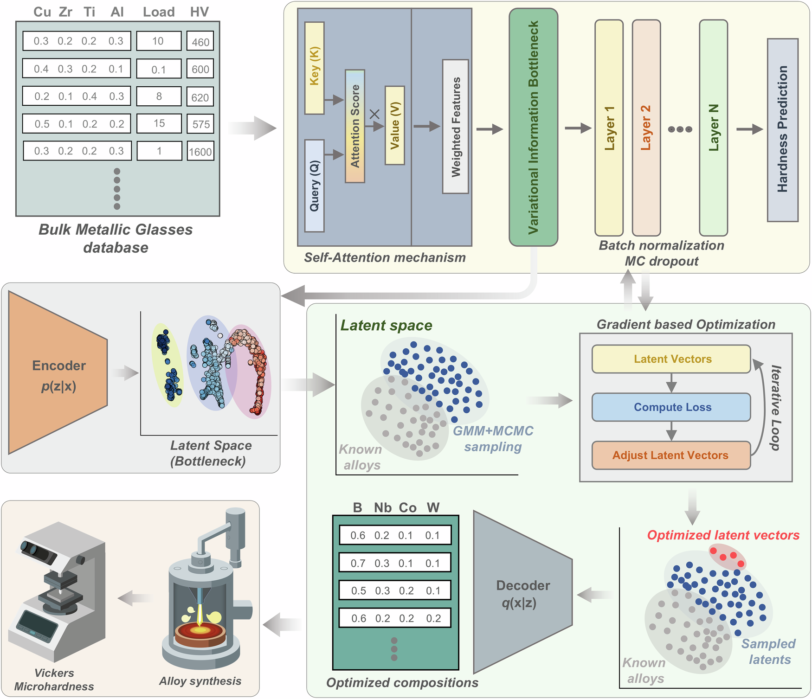
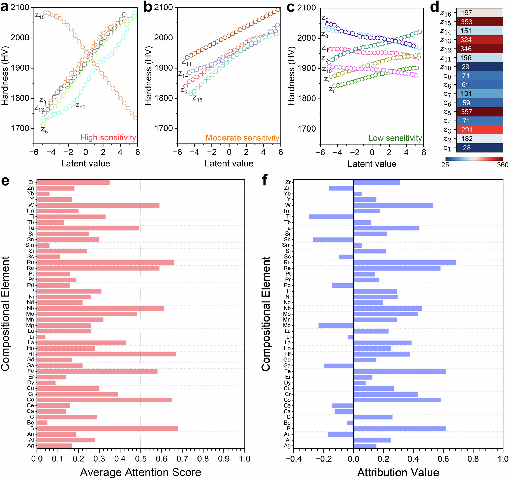
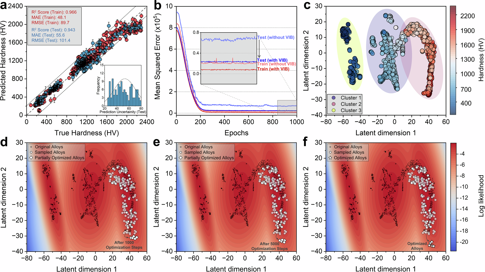
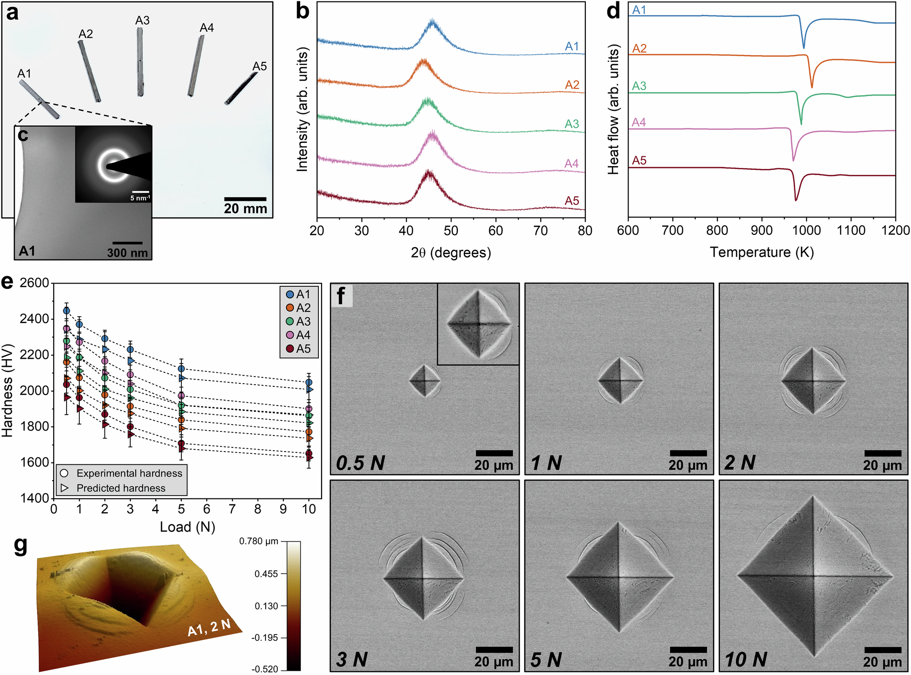
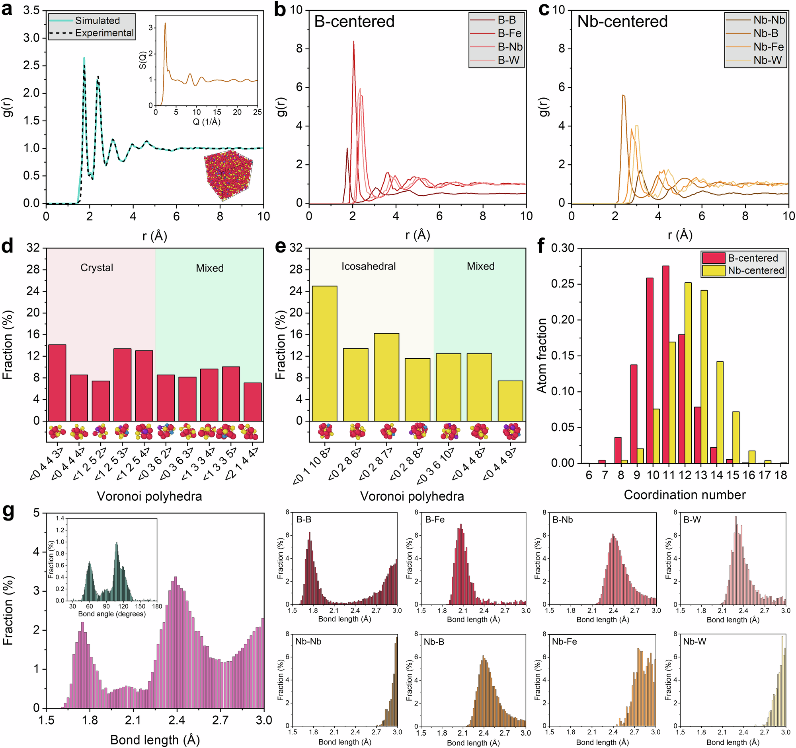
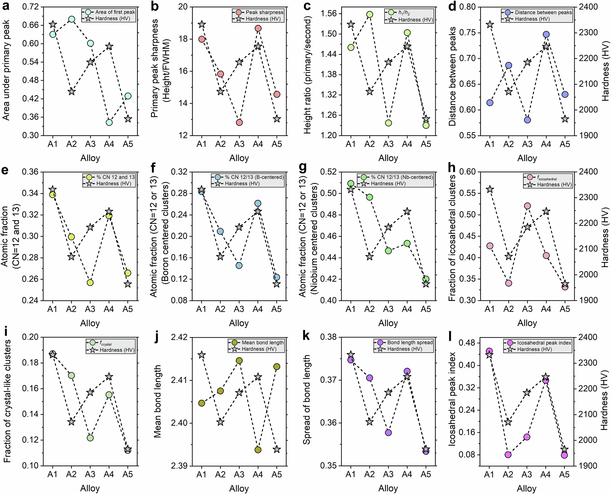

全文精读
面向高硬度块体多组元金属玻璃发现的注意力增强变分学习
Attention-enhanced variational learning for physically informed discovery of exceptionally hard multicomponent bulk metallic glasses
解读更新 2026-10-18 08:33 · 依据论文全文整理
全文精读已完成，文章版正在逐步升级。现有内容可继续阅读。
本文针对多组元合金成分空间庞大、实验数据稀缺且极值硬度难以可靠外推的问题，提出VIBANN，将自注意力、变分信息瓶颈、潜空间生成与不确定性筛选结合。作者以该框架设计并实验制备五种硼、铌、铁及难熔元素富集的块体金属玻璃，报告其形成直径2 mm的非晶棒材，A1在0.5 N下实测硬度2447±44 HV。模拟与结构表征显示，高硬度与致密堆积及局部结构特征相关。
研究问题
作者聚焦块体多组元金属玻璃的高硬度设计：成分维度高、已验证数据稀少，且不同实验条件会影响硬度比较。既有经验准则难以系统优化高阶合金，常规预测方法也可能在训练样本稀疏的高硬度尾部过度自信或失准。本文要解决的是在兼顾非晶形成可行性的前提下，如何有约束地寻找高硬度新成分。
方法与路线
VIBANN以56维成分和压痕载荷为输入，通过注意力加权、16维变分信息瓶颈、硬度预测及成分解码联合学习；设计阶段以GMM表示潜空间支持域，结合MCMC采样、梯度优化及可行性、新颖性、不确定性和保守硬度门槛筛选。作者还用MC dropout估计不确定性，并以AFM接触面积校正压痕硬度。
创新与比较
方法特色在于把信息压缩与预测、成分重构和潜空间搜索串成闭环，并将不确定性和数据支持度纳入候选接受条件，而非仅进行前向性能预测。作者还分析潜变量敏感性及元素归因，试图让生成方向可解释。解读：这些设计构成工作流层面的整合创新；其普适性仍需独立数据和不同合金家族验证。
证据与发现
作者报告筛得并制备五种候选合金，形成直径2 mm的非晶棒材；A1在0.5 N下实测2447±44 HV，且四种合金在10 N时仍高于1700 HV。MD结构分析显示硬度与致密配位、二十面体及类晶体局部结构、键长和键角规则性相关。作者用“higher fractions of densely coordinated environments”概括相关结构趋势。
局限与边界
作者明确指出高硬度尾部覆盖变弱：最高10%真实硬度样本的平均有符号误差为−122.14 HV，2500 HV以上数据稀疏；潜变量对应的具体冶金含义也未确定。结论限于数据集所覆盖的块体MMG化学与工艺空间，并非所有非晶材料的普遍规律。原文件缺项：资料范围未报告已核实的原页缺项，故无可列页码或受影响结论；不得据此断言存在缺失公式。
方向关联
对智能运维与可靠性研究的联系主要是方法迁移：可借鉴潜空间可行域、不确定性惩罚和保守下置信界筛选高风险候选；对结构设计可参考将成分及局部结构描述符与性能映射结合。解读：本文对象是新材料发现，不是设备运维或结构可靠性验证，不能直接视作这些领域的实证结论。
后续研究建议
建议在独立合金家族和更高硬度区间扩充实验数据，专门评估预测区间覆盖与极值偏差；同时对候选进行跨批次、跨载荷复测，并检验潜变量方向能否对应可测的局部结构量。建议比较不同不确定性估计和可行域模型对候选稳定性的影响；这些是后续研究设想，并非作者已报告的结果。
阅读建议
推荐给关注材料生成式设计、机器学习辅助合金发现及不确定性量化的读者，重点阅读其潜空间约束、候选筛选和实验闭环验证，并留意高硬度尾部低估及结论适用域限制。
原图未改动。以下图注来自标注的来源，不据此补写摘要未报告的实验结论。
已取得的论文原图


原文图注与出处
The input database contains alloy compositions, indentation loads, and measured Vickers hardness values. These data are used to train an attention-based neural surrogate in which a self-attention block reweights the compositional inputs, followed by a variational information bottleneck that compresses each composition–load pair into a low-dimensional latent representation. Batch normalization and Monte Carlo dropout are used in the predictor to improve generalization and quantify predictive uncertainty. The learned latent space is then used for inverse design by fitting a latent density model, sampling plausible candidate latents with a Gaussian-mixture-guided MCMC strategy, and iteratively refining promising seeds by gradient-based optimization of an uncertainty-aware objective. The optimized latent vectors are decoded into simplex-constrained alloy compositions, which are then synthesized and experimentally validated by Vickers microhardness measurements. This framework links data-driven hardness prediction, uncertainty-aware latent-space exploration, candidate generation, and experimental verification within a single alloy-discovery loop.
Bajpai, Anurag et al.
原文图页 · CC BY 4.0

原文图注与出处
a –c Latent traversals for a representative latent vector sampled from the high hardness region of the learned manifold. Each curve is obtained by perturbing a single latent coordinate over the same range while holding all remaining coordinates fixed and evaluating the predicted Vickers hardness. For clarity, the traversals are grouped by response strength into ( a ) high, ( b ) moderate, and ( c ) low sensitivity sets, showing that hardness variations are controlled by a limited subset of latent degrees of freedom, whereas most coordinates induce only weak changes over the same perturbation range. d Summary heatmap quantifying the traversal amplitude for each latent coordinate, reported as the peak-to-peak change in predicted hardness across the sweep, confirming that the dominant hardness response is concentrated in a small subset of latent coordinates. e Average attention scores derived from the attention layer of the VIBANN model highlight the most influential elements contributing to hardness prediction. f Integrated gradients attribution values for elemental fractions, quantifying the signed influence of small increases in elemental content on the predicted hardness under the simplex constraint, where positive values promote and negative values reduce hardness. Source data are provided as a Source Data file.
Bajpai, Anurag et al.
原文图页 · CC BY 4.0

原文图注与出处
a Predicted hardness versus measured hardness for the training set ( n = 538) and the held-out test set ( n = 135), where one data point represents one composition–load–hardness observation from the curated dataset. Symbols denote the predictive mean hardness, and the error bars denote ±1σ predictive uncertainty from n = 100 stochastic Monte Carlo dropout forward passes for each observation. The gray dashed diagonal indicates perfect agreement between predicted and measured values. The inset shows the distribution of predictive uncertainty for the test set. The dashed curve is the kernel density estimate of the uncertainty distribution. b Mean squared error during training for models with and without the variational information bottleneck. The inset shows the low-error region at later epochs, where the model with the bottleneck exhibits lower, more stable training and test errors. c Two-dimensional projection of the learned latent representation of the alloy dataset, colored by measured hardness. Three composition clusters are indicated to highlight the organization of low, intermediate, and high hardness alloys in latent space. d –f Gaussian mixture model log-likelihood landscape defined over the latent space and used to constrain candidate generation. Black dots denote the original alloy dataset. White circles denote sampled latent points. White diamonds denote partially optimized candidates after ( d ) 1000 optimization steps and ( e ) 5000 optimization steps. White stars in ( f ) denote the final optimized candidates. The progression shows candidate refinement within data-supported latent regions toward the high hardness sector of the learned design space. Source data are provided as a Source Data file.
Bajpai, Anurag et al.
原文图页 · CC BY 4.0

原文图注与出处
a Cast rod geometries of alloys A1-A5 reveal successful synthesis via copper mold suction casting. b X-ray diffraction patterns of all alloys exhibit broad diffuse halos, characteristic of amorphous structures. c Bright-field TEM image and corresponding SAED pattern of A1 confirms its fully amorphous nature. d Differential scanning calorimetry (DSC) curves highlight the glass transition (T g ) and crystallization (T x ) events; A1 shows the largest supercooled liquid region (ΔT x ), consistent with enhanced thermal stability. e Vickers microhardness as a function of load (0.5–10 N). Experimental points are presented as mean hardness values from n = 6 replicate indentations for each alloy at each load, and error bars denote ± 1 standard deviation (s.d.) across the six indentations. Predicted points denote the VIBANN predictive mean for the same alloy–load conditions with error bars denoting the Monte Carlo uncertainty (from 100 stochastic passes) associated with the prediction; A1 consistently exhibits the highest hardness across loads. f SEM images of representative indentations (0.5–10 N) for A1 alloy reveal minimal cracking and observable pile-up, supporting robust plastic resistance. g 3D AFM image of a 2 N indentation in the A1 alloy demonstrates symmetric pile-up morphology. Source data are provided as a Source Data file.
Bajpai, Anurag et al.
原文图页 · CC BY 4.0已取得的论文原图


原文图注与出处
a Simulated and experimental radial distribution functions (RDFs) showing excellent agreement, validating structural fidelity; the inset shows the experimental structure factor S(Q) and a representative atomic model. b , c Partial RDFs for B-centered and Nb-centered clusters, respectively, highlighting distinct local environments around each species. d Coordination number distributions for B- and Nb-centered clusters reveal predominant 11-, 12- and 13-fold packing motifs. e , f Voronoi polyhedra statistics for B- and Nb-centered atoms show dominant crystal-like motifs and icosahedral order, suggesting competing short- and medium-range orders. g Total and partial bond-length distributions for atomic pairs indicate well-defined bonding shells and species-specific bonding characteristics; the inset in the left panel shows the bond-angle distribution with peaks near 109.5° (icosahedral) and 60° and 120° (planar motifs), reinforcing local order. Source data are provided as a Source Data file.
Bajpai, Anurag et al.
原文图页 · CC BY 4.0

原文图注与出处
a–d Descriptors derived from the total radial distribution function (RDF): ( a ) area under the primary peak; ( b ) primary peak sharpness, defined as peak height divided by full-width-at-half-maximum (FWHM); ( c ) height ratio between the first and second RDF peaks ( h 1 / h 2 ); and ( d ) separation between the first and second RDF peaks. e–g Fractions of densely coordinated environments with coordination number (CN) 12 or 13: ( e ) total atomic fraction; ( f ) B-centered fraction; and ( g ) Nb-centered fraction. h , i Fractions of icosahedral and crystal-like clusters obtained from Voronoi analysis. j , k Mean bond length and bond-length spread, respectively. l Icosahedral peak index. In each panel, colored circles represent the structural descriptor for alloys A1–A5, whereas gray star symbols connected by dashed lines denote the experimentally measured Vickers hardness of the corresponding alloys. Together, these comparisons show that higher hardness is associated with tighter short-range packing, larger fractions of densely coordinated and icosahedral environments, and stronger local structural regularity. Source data are provided as a Source Data file.
Bajpai, Anurag et al.
原文图页 · CC BY 4.0查看公开摘要
The discovery of high-performance multicomponent alloys is constrained by the vastness of composition space and the scarcity of experimentally validated data. We develop VIBANN, a variational information bottleneck-augmented attention-based neural network framework, for uncertainty-aware inverse design of exceptionally hard bulk multicomponent metallic glasses. The model learns chemically structured latent representations of alloy composition and indentation load to search the candidate space under constraints of chemical plausibility, novelty, and predictive uncertainty. Guided by this framework, we synthesize five B-Nb-Fe-W-Co/Hf/Ru/Zr-rich bulk multicomponent metallic glasses. All alloys form fully amorphous rods of 2 mm diameter and reach Vickers hardness values of about 2450 HV, among the highest reported for bulk metallic glasses under comparable conditions. Latent space analysis, attribution trends, and molecular dynamics-based atomistic simulations show that exceptional hardness in this compositional space arises from dense atomic packing, boron-enriched short-range environments and refractory-stabilized local rigidity. Together, we show that uncertainty-aware latent space learning can discover bulk metallic glasses that combine amorphous structure with exceptionally high hardness under limited data conditions.